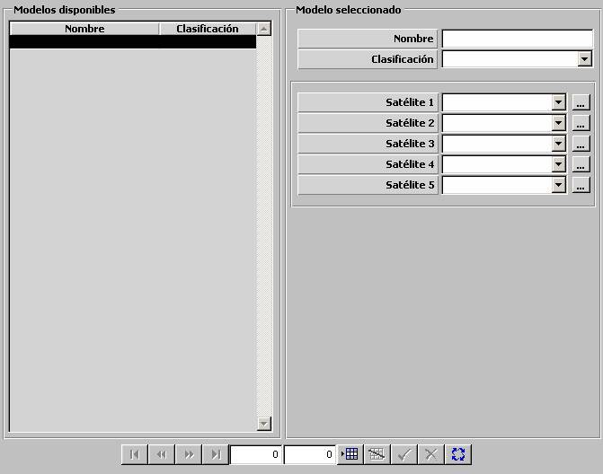

Conjunto de Satélites

Mediante esta tabla de Conjunto de Satélites se especifica una lista de satélites disponibles (hasta cinco). Para cada Ejercicio se asigna un Conjunto de Satélites para el bando Azul y otro para el Rojo (ver Preparación de Ejercicios). Durante la Ejecución del Ejercicio, las unidades podrán recibir contactos de aquel satélite para el cual dispongan de Receptor (ver Preparación de Unidades).
Satélite (1 a 5): Podrá ser seleccionado de entre los Satélites definidos. Mediante el botón de etiqueta “...” se abre el diálogo para definir Satélites. Ver apartado Preparación – Modelos Básicos – Comunicaciones – Satélite.